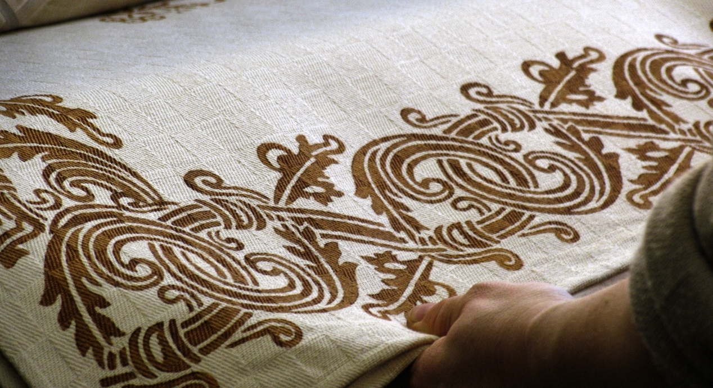
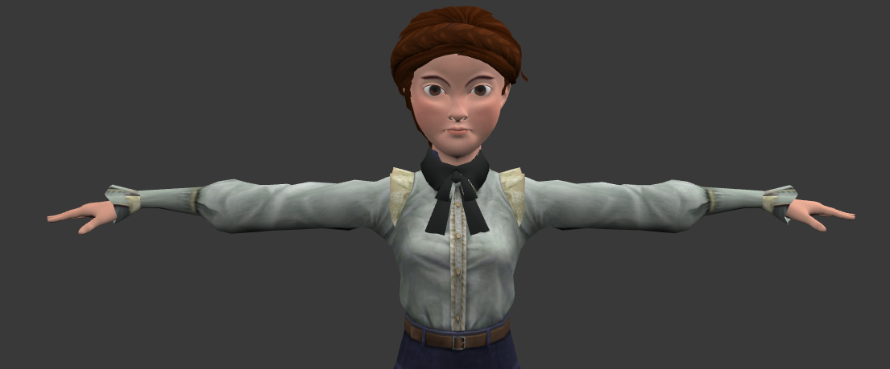

Nice to MET you
A new experience at MET - Museo Etnografico degli Usi e Costumi della Gente di Romagna
Nice to MET you has been developed for the final exam of "Intangible Artifacts, Cultural Heritage and Multimedia", course of Digital Humanities and Digital Knowledge, held by professor Sofia Pescarin at the University of Bologna, a.y. 2018/2019.
The focus of the project is the tradition of rust printing on fabric, once practiced in rural areas of Romagna. The idea for the project was born thinking about the art that characterizes Rimini, my hometown. Rust printing was an excellent candidate considering that it is an art that is gradually disappearing and only a few people know the technique of realization. The idea is developed within two rooms of the MET - Museo Etnografico degli Usi e Costumi della Gente di Romagna, from which the project takes its name. It consists of two closely linked parts: a short 3D animation film that explains how rust prints are made and a workshop to put the knowledge gained into practice and print a T-shirt.
Below you will find the research path undertaken for the realization of the project and all its stages of processing.
Enjoy the reading!
The cretive process
Workflow
1
This project has been developed as a final examination for the course of "Intangible Artifacts, Cultural Heritage and Multimedia". The aim is to develop an idea that can transform an ancient tradition of Romagna into...
(Read more here)2
Find here the highlights of the project described through the template for the proposal of a case study for the interactive media design project.
3
Find here the interview to the curator of the educational services of the museum ad the visit report, to understand what kind of users attend the museum, what are the positive aspects of the museum and which ones to improve/expand.
4
Find here the presentation of the project and the detailed description of the two ideas.


© Copyright 2019 Nice to MET you - All Rights Reserved